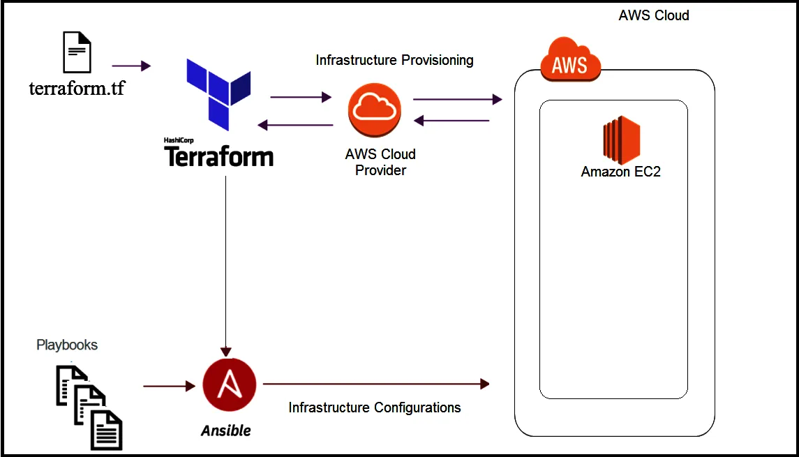
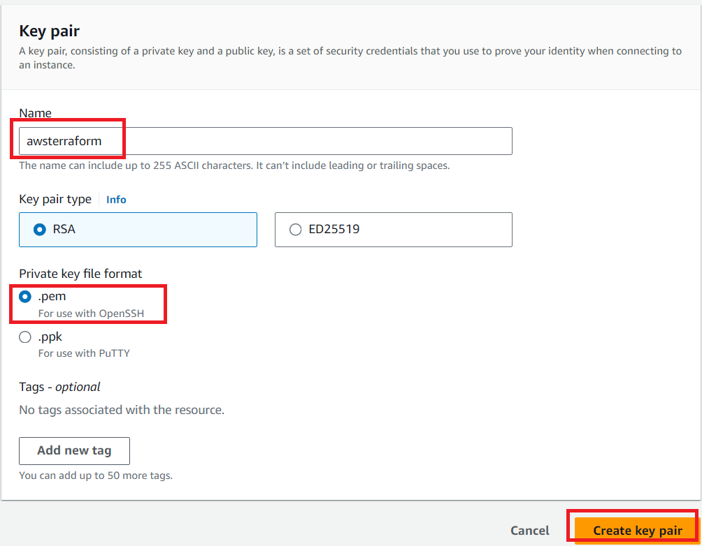
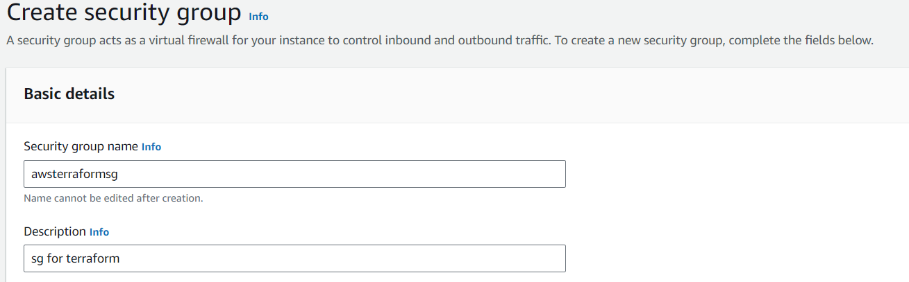
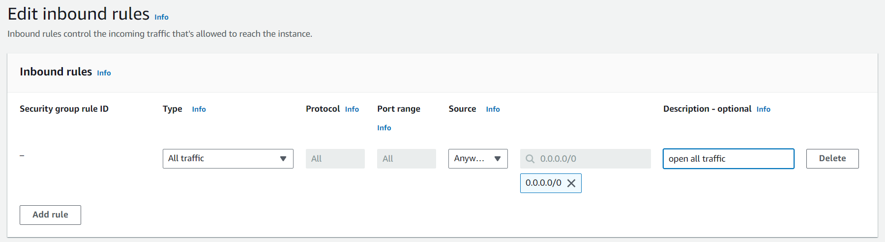

Deploying VyOS in the AWS cloud
With the help of Terraform, you can quickly deploy VyOS-based infrastructure in the AWS cloud. If necessary, the infrastructure can be removed using terraform. Also we will make provisioning using Ansible.
{kind=link}
In this case, we’ll create the necessary files for Terraform and Ansible next using Terraform we’ll create a single instance on the AWS cloud and make provisioning using Ansible.
Preparation steps for deploying VyOS on AWS
How to create a single instance and install your configuration using Terraform+Ansible+AWS Step by step:
AWS
1 Create an account with AWS and get your “access_key”, “secret key”
2 Create a key pair and download your .pem key
{kind=link}
3 Create a security group for the new VyOS instance and open all traffic
 {kind=link}
{kind=link}
Terraform
1 Create an UNIX or Windows instance
2 Download and install Terraform
3 Create the folder for example /root/awsterraform
mkdir /root/awsterraform
4 Copy all files into your Terraform project "/root/awsterraform" (vyos.tf, var.tf, terraform.tfvars,version.tf), more detailed see `Structure of files Terrafom for AWS`_
5 Type the commands :
cd /<your folder>
terraform init
Ansible
1 Create an UNIX instance whenever you want (local, cloud, and so on)
2 Download and install Ansible
3 Create the folder for example /root/aws/
4 Copy all files into your Ansible project “/root/aws/” (ansible.cfg, instance.yml, mykey.pem and “all”), more detailed see Structure of files Ansible for AWS
mykey.pem you have to get using step 1.2
Start
Type the commands on your Terrafom instance:
cd /<your folder>
terraform plan
terraform apply
yes
Start creating an AWS instance and check the result
root@localhost:~/awsterraform# terraform apply
Terraform used the selected providers to generate the following execution plan.
Resource actions are indicated with the following symbols:
+ create
Terraform will perform the following actions:
# aws_instance.myVyOSec2 will be created
+ resource "aws_instance" "myVyOSec2" {
+ ami = "ami-************62c2d"
+ arn = (known after apply)
+ associate_public_ip_address = (known after apply)
+ availability_zone = (known after apply)
+ cpu_core_count = (known after apply)
+ cpu_threads_per_core = (known after apply)
+ disable_api_stop = (known after apply)
+ disable_api_termination = (known after apply)
+ ebs_optimized = (known after apply)
+ get_password_data = false
+ host_id = (known after apply)
+ host_resource_group_arn = (known after apply)
+ iam_instance_profile = (known after apply)
+ id = (known after apply)
+ instance_initiated_shutdown_behavior = (known after apply)
+ instance_lifecycle = (known after apply)
+ instance_state = (known after apply)
+ instance_type = "t2.micro"
+ ipv6_address_count = (known after apply)
+ ipv6_addresses = (known after apply)
+ key_name = "awsterraform"
+ monitoring = (known after apply)
+ outpost_arn = (known after apply)
+ password_data = (known after apply)
+ placement_group = (known after apply)
+ placement_partition_number = (known after apply)
+ primary_network_interface_id = (known after apply)
+ private_dns = (known after apply)
+ private_ip = (known after apply)
+ public_dns = (known after apply)
+ public_ip = (known after apply)
+ secondary_private_ips = (known after apply)
+ security_groups = [
+ "awsterraformsg",
]
+ source_dest_check = true
+ spot_instance_request_id = (known after apply)
+ subnet_id = (known after apply)
+ tags = {
+ "name" = "VyOS System"
}
+ tags_all = {
+ "name" = "VyOS System"
}
+ tenancy = (known after apply)
+ user_data = (known after apply)
+ user_data_base64 = (known after apply)
+ user_data_replace_on_change = false
+ vpc_security_group_ids = (known after apply)
}
# local_file.ip will be created
+ resource "local_file" "ip" {
+ content = (known after apply)
+ content_base64sha256 = (known after apply)
+ content_base64sha512 = (known after apply)
+ content_md5 = (known after apply)
+ content_sha1 = (known after apply)
+ content_sha256 = (known after apply)
+ content_sha512 = (known after apply)
+ directory_permission = "0777"
+ file_permission = "0777"
+ filename = "ip.txt"
+ id = (known after apply)
}
# null_resource.SSHconnection1 will be created
+ resource "null_resource" "SSHconnection1" {
+ id = (known after apply)
}
# null_resource.SSHconnection2 will be created
+ resource "null_resource" "SSHconnection2" {
+ id = (known after apply)
}
Plan: 4 to add, 0 to change, 0 to destroy.
Changes to Outputs:
+ my_IP = (known after apply)
Do you want to perform these actions?
Terraform will perform the actions described above.
Only 'yes' will be accepted to approve.
Enter a value: yes
aws_instance.myVyOSec2: Creating...
aws_instance.myVyOSec2: Still creating... [10s elapsed]
aws_instance.myVyOSec2: Still creating... [20s elapsed]
aws_instance.myVyOSec2: Still creating... [30s elapsed]
aws_instance.myVyOSec2: Still creating... [40s elapsed]
aws_instance.myVyOSec2: Creation complete after 44s [id=i-09edfca15aac2fe0a]
null_resource.SSHconnection1: Creating...
null_resource.SSHconnection2: Creating...
null_resource.SSHconnection1: Provisioning with 'file'...
null_resource.SSHconnection2: Provisioning with 'remote-exec'...
null_resource.SSHconnection2 (remote-exec): Connecting to remote host via SSH...
null_resource.SSHconnection2 (remote-exec): Host: 10.217.80.104
null_resource.SSHconnection2 (remote-exec): User: root
null_resource.SSHconnection2 (remote-exec): Password: true
null_resource.SSHconnection2 (remote-exec): Private key: false
null_resource.SSHconnection2 (remote-exec): Certificate: false
null_resource.SSHconnection2 (remote-exec): SSH Agent: false
null_resource.SSHconnection2 (remote-exec): Checking Host Key: false
null_resource.SSHconnection2 (remote-exec): Target Platform: unix
local_file.ip: Creating...
local_file.ip: Creation complete after 0s [id=e8e91f2e24579cd28b92e2d152c0c24c3bf4b52c]
null_resource.SSHconnection2 (remote-exec): Connected!
null_resource.SSHconnection1: Creation complete after 0s [id=7070868940858935600]
null_resource.SSHconnection2 (remote-exec): PLAY [integration of terraform and ansible] ************************************
null_resource.SSHconnection2 (remote-exec): TASK [Wait 300 seconds, but only start checking after 60 seconds] **************
null_resource.SSHconnection2: Still creating... [10s elapsed]
null_resource.SSHconnection2: Still creating... [20s elapsed]
null_resource.SSHconnection2: Still creating... [30s elapsed]
null_resource.SSHconnection2: Still creating... [40s elapsed]
null_resource.SSHconnection2: Still creating... [50s elapsed]
null_resource.SSHconnection2: Still creating... [1m0s elapsed]
null_resource.SSHconnection2 (remote-exec): ok: [54.xxx.xxx.xxx]
null_resource.SSHconnection2 (remote-exec): TASK [Configure general settings for the vyos hosts group] *********************
null_resource.SSHconnection2: Still creating... [1m10s elapsed]
null_resource.SSHconnection2 (remote-exec): changed: [54.xxx.xxx.xxx]
null_resource.SSHconnection2 (remote-exec): PLAY RECAP *********************************************************************
null_resource.SSHconnection2 (remote-exec): 54.xxx.xxx.xxx : ok=2 changed=1 unreachable=0 failed=0 skipped=0 rescued=0 ignored=0
null_resource.SSHconnection2: Creation complete after 1m16s [id=4902256962410024771]
Apply complete! Resources: 4 added, 0 changed, 0 destroyed.
Outputs:
my_IP = "54.xxx.xxx.xxx"
After executing all the commands you will have your VyOS instance on the AWS cloud with your configuration, it’s a very convenient desition. If you need to delete the instance please type the command:
terraform destroy
Troubleshooting
1 Ansible doesn’t connect via SSH to your AWS instance: you have to check that your SSH key has copied into the path /root/aws/. Also, increase the time in the file instance.yml from 300 sec to 500 sec or more. (It depends on your location). Make sure that you have opened access to the instance in the security group.
2 Terraform doesn’t connect via SSH to your Ansible instance: you have to check the correct login and password in the part of the file VyOS. tf
connection {
type = "ssh"
user = "root" # open root access using login and password on your Ansible
password = var.password # check password in the file terraform.tfvars isn't empty
host = var.host # check the correct IP address of your Ansible host
}
Make sure that Ansible is pinging from Terrafom.
Structure of files Terrafom for AWS
.
├── vyos.tf # The main script
├── var.tf # The file of all variables in "vyos.tf"
├── versions.tf # File for the changing version of Terraform.
└── terraform.tfvars # The value of all variables (passwords, login, ip adresses and so on)
File contents of Terrafom for AWS
vyos.tf
##############################################################################
# Build an VyOS VM from the Marketplace
# To finde nessesery AMI image_ in AWS
#
# In the script vyos.tf we'll use default values (you can chang it as you need)
# AWS Region = "us-east-1"
# AMI = "standard AMI of VyOS from AWS Marketplace"
# Size of VM = "t2.micro"
# AWS Region = "us-east-1"
# After deploying the AWS instance and getting an IP address, the IP address is copied into the file
#"ip.txt" and copied to the Ansible node for provisioning.
##############################################################################
provider "aws" {
access_key = var.access
secret_key = var.secret
region = var.region
}
variable "region" {
default = "us-east-1"
description = "AWS Region"
}
variable "ami" {
default = "ami-**************3b3" # ami image please enter your details
description = "Amazon Machine Image ID for VyOS"
}
variable "type" {
default = "t2.micro"
description = "Size of VM"
}
# my resource for VyOS
resource "aws_instance" "myVyOSec2" {
ami = var.ami
key_name = "awsterraform" # Please enter your details from 1.2 of Preparation steps for deploying VyOS on AWS
security_groups = ["awsterraformsg"] # Please enter your details from 1.3 of Preparation steps for deploying VyOS on AWS
instance_type = var.type
tags = {
name = "VyOS System"
}
}
##############################################################################
# specific variable (to getting type "terraform plan"):
# aws_instance.myVyOSec2.public_ip - the information about public IP address
# of our instance, needs for provisioning and ssh connection from Ansible
##############################################################################
output "my_IP"{
value = aws_instance.myVyOSec2.public_ip
}
##############################################################################
#
# IP of aws instance copied to a file ip.txt in local system Terraform
# ip.txt looks like:
# cat ./ip.txt
# ххх.ххх.ххх.ххх
##############################################################################
resource "local_file" "ip" {
content = aws_instance.myVyOSec2.public_ip
filename = "ip.txt"
}
#connecting to the Ansible control node using SSH connection
##############################################################################
# Steps "SSHconnection1" and "SSHconnection2" need to get file ip.txt from the terraform node and start remotely the playbook of Ansible.
##############################################################################
resource "null_resource" "SSHconnection1" {
depends_on = [aws_instance.myVyOSec2]
connection {
type = "ssh"
user = "root"
password = var.password
host = var.host
}
#copying the ip.txt file to the Ansible control node from local system
provisioner "file" {
source = "ip.txt"
destination = "/root/aws/ip.txt" # The folder of your Ansible project
}
}
resource "null_resource" "SSHconnection2" {
depends_on = [aws_instance.myVyOSec2]
connection {
type = "ssh"
user = "root"
password = var.password
host = var.host
}
#command to run Ansible playbook on remote Linux OS
provisioner "remote-exec" {
inline = [
"cd /root/aws/",
"ansible-playbook instance.yml" # more detailed in "File contents of Ansible for AWS"
]
}
}
var.tf
variable "password" {
description = "pass for Ansible"
type = string
sensitive = true
}
variable "host"{
description = "The IP of my Ansible"
type = string
}
variable "access" {
description = "my access_key for AWS"
type = string
sensitive = true
}
variable "secret" {
description = "my secret_key for AWS"
type = string
sensitive = true
}
versions.tf
terraform {
required_providers {
aws = {
source = "hashicorp/aws"
version = "~> 5.0"
}
}
}
terraform.tfvars
password = "" # password for Ansible SSH
host = "" # IP of my Ansible
access = "" # access_key for AWS
secret = "" # secret_key for AWS
Structure of files Ansible for AWS
.
├── group_vars
└── all
├── ansible.cfg
├── mykey.pem
└── instance.yml
File contents of Ansible for AWS
ansible.cfg
[defaults]
inventory = /root/aws/ip.txt
host_key_checking= False
private_key_file = /root/aws/awsterraform.pem # check the name
remote_user=vyos
mykey.pem
Copy your key.pem from AWS
instance.yml
##############################################################################
# About tasks:
# "Wait 300 seconds, but only start checking after 60 seconds" - try to make ssh connection every 60 seconds until 300 seconds
# "Configure general settings for the VyOS hosts group" - make provisioning into AWS VyOS node
# You have to add all necessary cammans of VyOS under the block "lines:"
##############################################################################
- name: integration of terraform and ansible
hosts: all
gather_facts: 'no'
tasks:
- name: "Wait 300 seconds, but only start checking after 60 seconds"
wait_for_connection:
delay: 60
timeout: 300
- name: "Configure general settings for the VyOS hosts group"
vyos_config:
lines:
- set system name-server xxx.xxx.xxx.xxx
save:
true
group_vars/all
ansible_connection: ansible.netcommon.network_cli
ansible_network_os: vyos.vyos.vyos
ansible_user: vyos
Sourse files for AWS from GIT
All files about the article can be found here